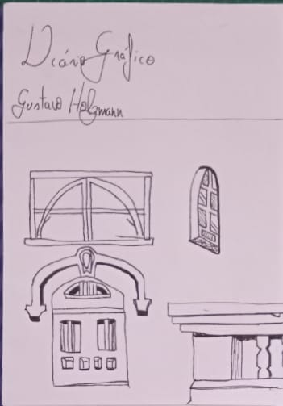

Projetos
Desenvolvimento do Trabalho de Pixel Art
2022
Nesse trabalho, foi requisitado uma adaptação de determinada temática para a linguagem de Pixel Art, em resoluções de 16x16, 128x128 e em um grid não quadrado. Num primeiro momento, existia a dificuldade de escolher qual temática seguir. Nesse sentido, houveram os primeiros experimentos numa visita ao Centro de Humanidades 1 na UFC:
A dificuldade da escolha residia na necessidade de escolher algo que encaixava bem numa simplificação, mas que poderia escalar bem em uma resolução maior. Finalmente, decidi trabalhar com filmes de Stop Motion, especialmente os do cineasta Tim Burton. Aqui se iniciou minha coleta de referências:
Esses foram as primeiras ideias de composição a partir deste tema: